01 미디어월과 미디어파사드
Work 01
Work 01
다다명동
신세계백화점 명동 미디어월에서 상영된 미디어월 작업. 명동의 하루를 아침, 밤, 새벽으로 재구성한다.
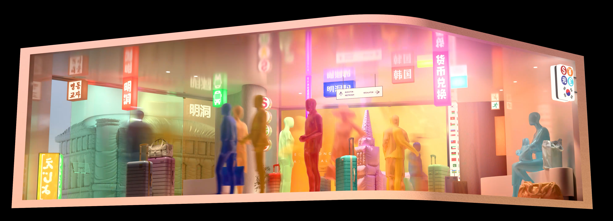
2025 아트코리아랩 프로그램의 일환으로 신세계백화점 명동 미디어월에서 상영된 미디어월 작업이다. 서울의 대표적 도시 공간인 명동의 하루를 아침, 밤, 새벽으로 예술적으로 재구성한다.
명동이 가진 이동성, 관광, 상업적 에너지, 거리 음식 문화, 빛의 리듬을 하나의 가상 쇼윈도처럼 펼쳐낸다. 명동을 단순한 공간이 아니라 다양한 문화와 바쁜 한국인들이 교차하는 도시적 신호의 장소로 해석하였다.

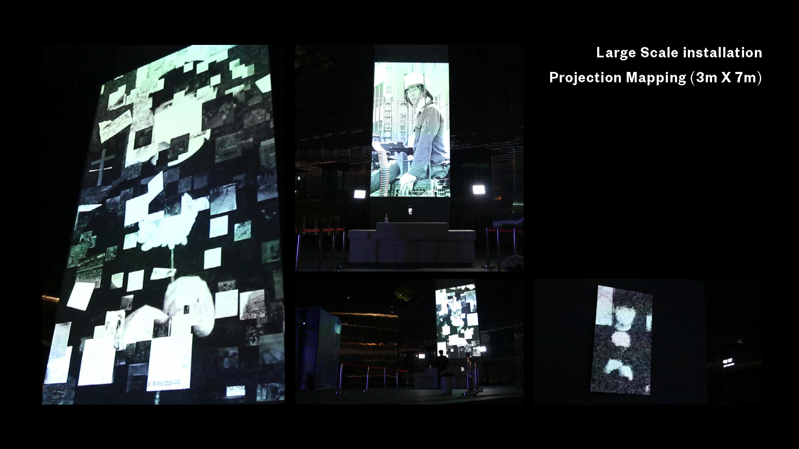
2020년 국립아시아문화전당에서 선보인 5·18 광주민주화운동 기념 인터랙티브 미디어 설치 작업이다. 관객의 실시간 신체 인식과 헌화 제스처를 바탕으로, 관객의 실루엣 위에 5·18 관련 아카이브 사진들이 모자이크처럼 생성된다.
관객의 몸과 제스처를 통해 기억과 애도의 행위를 Covid 19 상황에서 비접촉으로 참여할 수 있도록 도와주었다. 역사적 기록, 신체 인식, 실시간 시각화를 결합한 경험이었다.

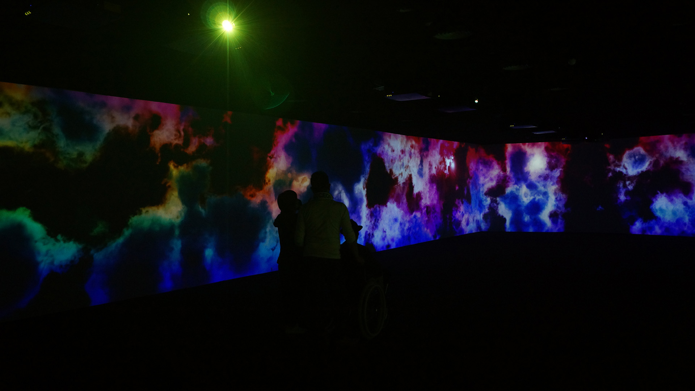
판교 파미에스몰에서 선보인 사운드 반응형 미디어 설치 작업이다. 판교의 지역적 분위기와 쇼핑몰의 소음을 하나의 생성 변수로 받아들이며, 실시간으로 폭포와 구름 같은 이미지의 움직임, 밀도, 채도를 변화시킨다.
조용한 공간에서는 부드럽고 성긴 흐름이 나타나고, 소리가 커질수록 더욱 밀도 있고 격렬한 흐름이 생성된다.
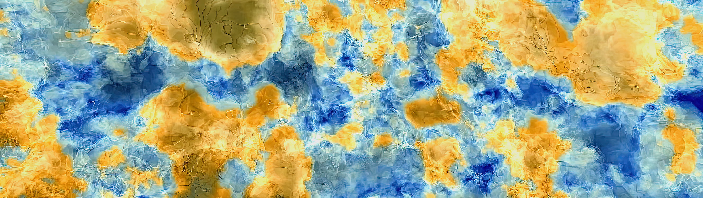
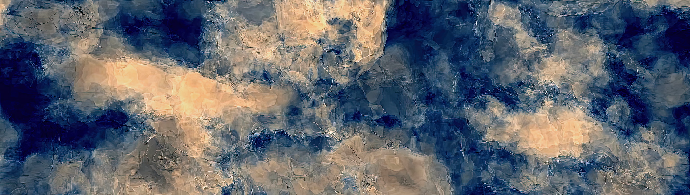
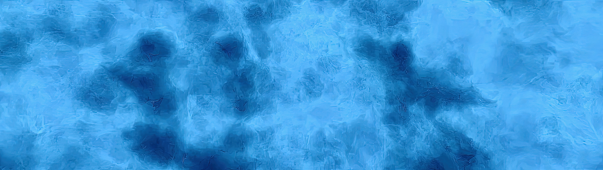
경상도를 고향으로 둔 작가들로부터, 추억의 장소인 해운대를 빛과 물결의 풍경으로 표현한 미디어아트 영상이다. 시냅스와 뉴런이 서로 연결되듯, 기억 역시 사라지는 것이 아니라 보이지 않는 방식으로 이어지고 축적된다.
한 번의 파도가 지나가면 한 사람의 기억은 사라지는 듯 보이지만, 만인의 기억은 결국 바다의 깊이에 남아 다음 물결 속에서도 흔적을 드러낸다. 작품은 아침, 낮, 밤, 새벽 순으로 하늘과 햇빛, 모래와 달빛의 색을 통해 바다가 여전히 품고 있는 만인의 기억을 하나의 아카이브로 표현한다.

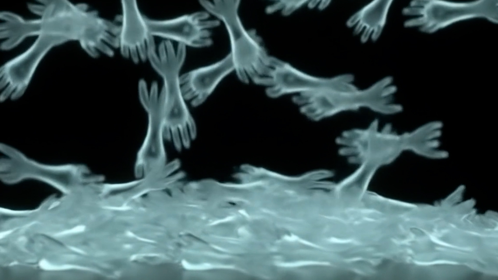
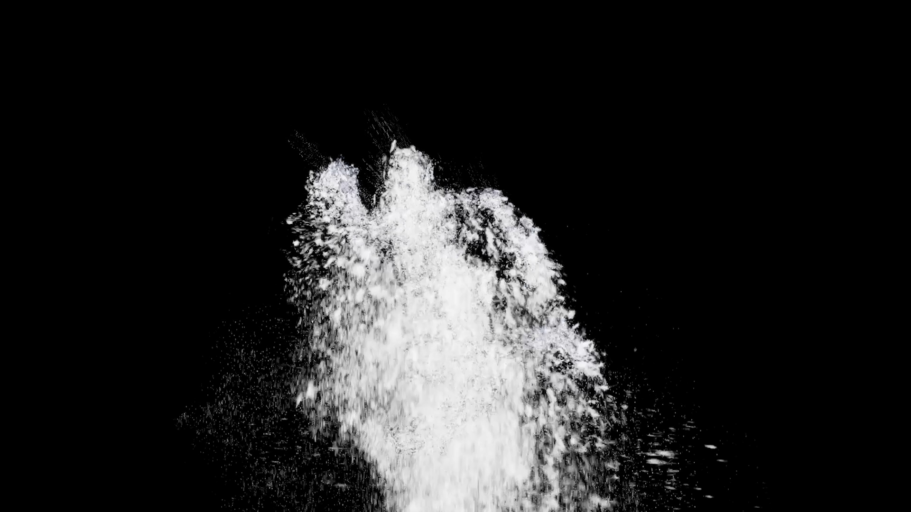
어둠 속을 떠다니는 손 모양의 빛나는 물고기들이 모이고 흩어지고 녹아내리며, 지각의 표면 아래 기억과 상실과 재생의 꿈같은 이동을 메아리친다.
건축적 미디어 파사드로 투사된 라이브 미디어 퍼포먼스다. 시간과 상실, 그리고 회귀에 맞선 인간의 분투를 비추는 연어의 여정을 메타포로 삼아 삶과 죽음의 순환적 본질을 탐구한다.
실시간 퍼포먼스와 제너러티브 비주얼을 결합해, 관객을 변형의 의식 속으로 끌어들인다. 무용수의 몸과 투사된 이미지가 함께 호흡한다.


원소 주기율표의 데이터를 하모노그래프 기반 함수로 매핑하여 새로운 우주적 시각 체계로 재구성한 VR 데이터 시각화 설치 작업이다. 과학적 데이터와 상상력을 결합하여, 원소와 별자리, 구조와 움직임이 하나의 가상 우주로 경험되는 방식을 실험하였다.
2019년 국민대학교 제16회 조형전에서 대상을 수상한 이 작업은, 보이지 않는 과학적 정보와 수치를 몰입형 VR 컨텐츠로 확장하였다.


2024년 CalArts에서 선보인 인터랙티브 리서치 설치 작업으로, 인간이 인공지능 존재와 제한된 상호작용을 맺을 때 발생하는 심리적 관계를 탐구한다.
디지털 휴먼, 대형 투명 구체, 센서, 대화형 AI, 음성 합성, 모터 움직임, 조명 반응을 결합하여 관객이 AI 존재를 하나의 감정적 대상으로 읽게 되는 과정을 실험한다. 관객의 입력과 제스처는 감정으로 변환되고, 이는 구체의 움직임, 목소리의 톤, 조명 반응으로 다시 출력된다.


조선 후기 화가이자 김홍도의 스승인 강세황을 실시간 AI 휴먼으로 디지털 부활시킨 인터랙티브 미디어 설치이다. 3D 재구성, 모션캡쳐, 음성 인터랙션을 통해 관객은 역사적으로 재해석된 인물과 대화하고, 포즈를 취하고, 사진을 찍을 수 있다.
전통적 유산 보존은 정적인 재현에 초점을 맞춰왔지만, 기억은 수행적이다. 제스처, 목소리, 행동으로 살아남는다. 본 프로젝트는 박물관 방문객이 응답하는 디지털 학자를 마주하게 하여, 유산을 대화로, 기억을 공감으로 전환하는 사이보그 박물관학을 제안한다.

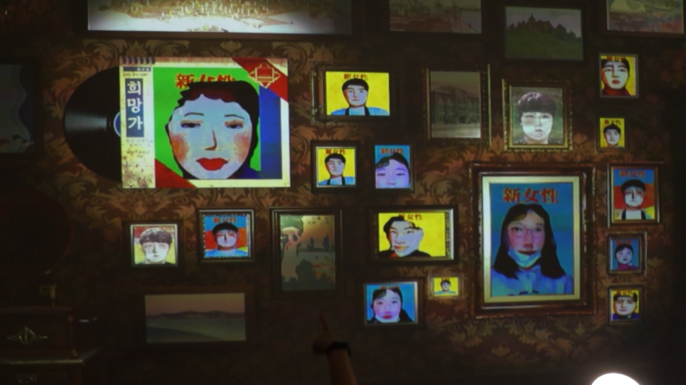

식민지 시기 한국의 신여성 잡지 문화의 미학을 재구성한 인터랙티브 미디어 설치다. 관객의 초상이 실시간으로 캡처되어 AI 기반 페이스 스왑과 뉴럴 스타일 트랜스퍼를 거치며, 현대적 정체성이 20세기 초의 시각적 모더니티와 결합된 재해석된 표지로 변환된다.
각 초상은 제물포 초기 사진관의 자유롭고 활기찬 톤으로 양식화되어, 실시간으로 가상의 벽에 자동으로 프레이밍·전시·아카이브된다. 사진의 역할을 기록이자 수행으로 성찰하며, 관객을 디지털로 재구성된 근대사의 참여자로 전환한다.
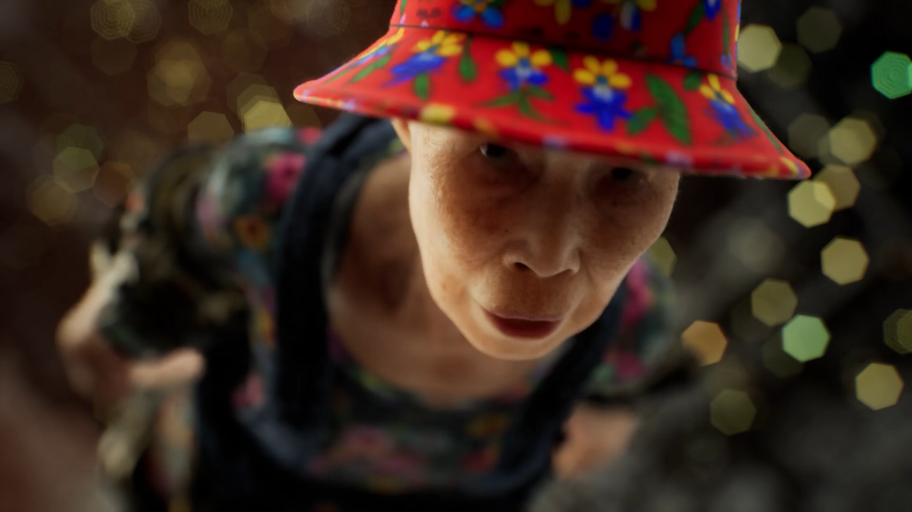


미디어 아티스트 Yaloo의 외할머니를 볼류메트릭 스캐닝, MetaHuman 리깅, AI 기반 제스처 애니메이션으로 복원한 디지털 휴먼 프로젝트다. 송은아트어워드, LA Rip Space, SF 836M, 서서울미술관 등 국내외 다수의 전시 공간에서 선보였다.
사라진 존재에 대한 애정, 상실, 현전을 계산적 형식으로 번역하는 것을 탐구한다. 호흡, 깜빡임, 무게 이동 같은 미세한 제스처들을 합성해 더 이상 물리적 세계에 존재하지 않는 삶의 흔적을 시뮬레이션했다.
테크니컬 아티스트 및 파이프라인 리드로서 볼류메트릭 스캔 처리, Maya 리깅과 UV 워크플로, MetaHuman 통합, UE5 시퀀서 시네마틱, Blueprint 인터랙션 시스템, 실시간 퍼포먼스 최적화 전 과정을 담당했다.

영화감독을 꿈꾸는 한 청년이 자신보다 우월해 보이는 누군가를 만나 다시 꿈에 불을 붙이지만, 열등감과 환멸에 휩싸여 결국 삶을 끝내기로 한다. 마지막 순간, 사라져가는 그의 의식은 완성된 영화로 재구성되고, 미완의 기억들이 미정의 공간 속에서 무의미하게 반복된다.
두 명의 신비로운 남자, 청춘(30대)과 산아(40대)가 이 초현실적 풍경 속에 나타난다. 그들은 청춘이 이루지 못한 시나리오 작가의 꿈을 대신 살아가는 가을이라는 여성을 만난다.
반복되는 시간 이동, 미니멀한 정면 카메라 앵글, 크레스트 라인과 실험 음악 같은 초현실적 요소를 통해 현실과 꿈의 경계를 흐린다.
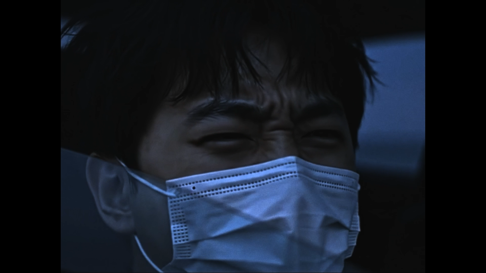
2025 Academy Nicholl Fellowships에 CalArts 영화학교를 대표하는 출품작으로 선정된 장편 시나리오다. CJ & TIFF K-Story Fund 쇼트리스트에도 선정되었다.
침묵, 정서적 억압, 개인을 보호하지 못하는 사회 시스템을 다룬다. 최소한의 대사, 롱테이크, 절제된 시각 언어를 통해 말해지지 않는 것들의 무게를 따라간다.